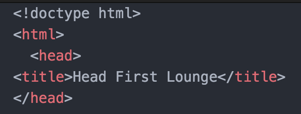
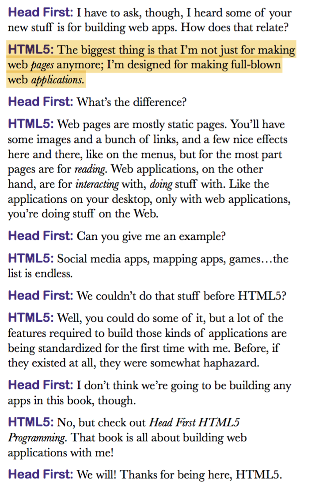

Chapter 6 - Getting serious with HTML
-
You should alawys tell the browser which version of HTML you are using...
-
You can tell the browser which version of HTML you're using with a doctype. It’s a little bit of markup you can use that goes at the very top of your HTML file.
-
By using a doctype, the browser is able to be more precise in the way it interprets and renders your pages.
-
In HTML5, it's just this...
!doctype html, but with an opening and closing bracket...
-
When the browser sees the above, it assumes you’re using standard HTML.
-
Going forward, rather than continue to crank out version 6, 7, 8 of HTML, the standards guys have turned the specification into a living standard that will document the technology as it evolves. So, no more version numbers.
-
You can write DOCTYPE or doctype. Both work.
An example:

HTML5 is not just for making web pages anymore; it's designed for making full-blown web applications.

Validating your HTML:
Use the WC3 validator. WC3 Validator
Character encoding:
The character encoding tells the browser what kind of characters are being used in the page. For instance, pages can be written using encodings for English, Chinese, Arabic, and lots of other types of characters. We do this by adding one more line to
our HTML, called a <meta> tag.
Character encodings give us a way to represent all the letters, numbers and other symbols in our language on the computer. You might know of some of these encodings, like ASCII or even Morse code, and there are many other encodings out there. Luckily,
the world has now standardized on the Unicode character encoding. With Unicode, we can represent all languages with one type of encoding. But, given there are other encodings out there, we still need to tell the browser we’re using Unicode (or
another encoding of your choice).
This is done by doing this: <meta charset="utf-8">
-
“meta” means we’re going to tell the browser something about the page...
-
Just like other HTML tags, the meta tag has attributes...
-
The charset attribute is where we specify the character encoding.
-
“utf-8” is an encoding in the Unicode family of encodings (one of several). “utf-8” is the version we use for web pages.
-
The <meta> tag belongs in the <head> element (remember that the <head> contains information about your page).